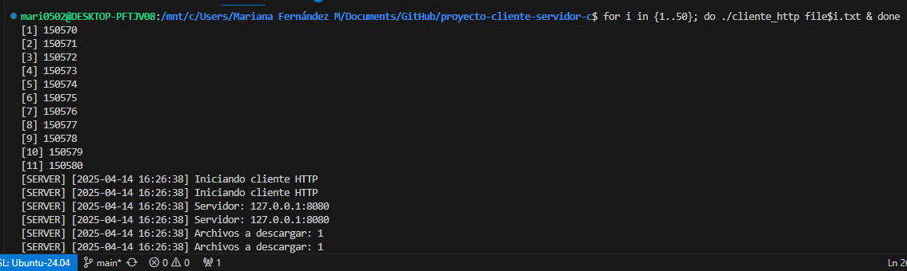
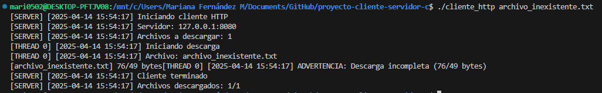
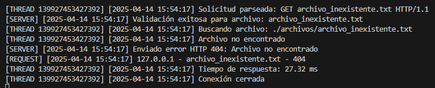
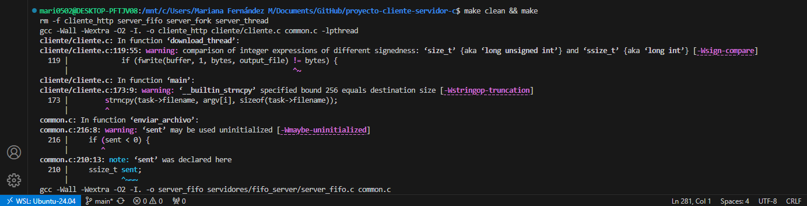
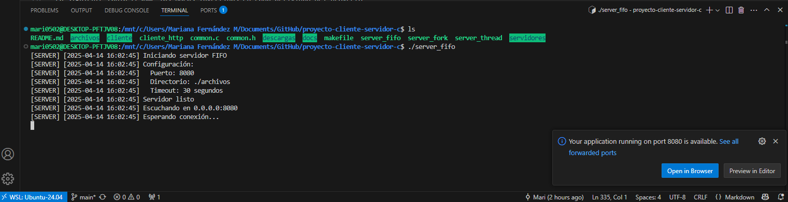
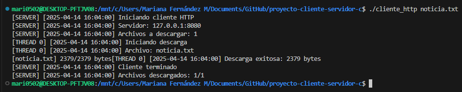

Integrantes:
Estefanía Delgado Castillo
Mariana Fernández Martínez
Diana Sanabria Calvo
Fecha de Entrega:
15 de abril de 2025
Profesora:
Ing. Erika Marín Schumann
Este proyecto consiste en la implementación de tres servidores HTTP desarrollados en el lenguaje C y diseñados para ejecutarse en un entorno Linux. Cada uno de estos servidores responde a solicitudes de archivos realizadas por clientes, ya sea desde un navegador web o desde una aplicación cliente propia. El protocolo utilizado para la comunicación es HTTP/1.0, por lo que los servidores deben interpretar correctamente solicitudes GET y responder con el contenido solicitado o con un mensaje de error si el archivo no existe.
El objetivo principal es comparar tres modelos de concurrencia para el manejo de múltiples solicitudes:
FIFO (First-In, First-Out): Atiende una solicitud a la vez de forma secuencial.
FORK: Crea un nuevo proceso por cada solicitud recibida.
THREAD: Crea un nuevo hilo por cada solicitud utilizando la biblioteca pthread.
| Componente | Especificaciones |
|---|---|
| Protocolo | HTTP/1.0 (GET) |
| Formatos soportados | TXT, Imágenes, HTML, BIN, y cualquier otro tipo de archivo presente en el directorio configurado |
| Códigos HTTP | 200 OK, 404 Not Found |
| Timeout | 30 segundos |
| Capacidad máxima | 100 clientes concurrentes |
Cliente (Browser/CLI) → [Servidor] → Archivos
↑
FIFO │ FORK │ THREAD Lo anterior representa la arquitectura general del sistema. El cliente, ya sea un navegador o una interfaz de línea de comandos (CLI), envía solicitudes al servidor para obtener archivos. Estos archivos pueden visualizarse en el navegador o descargarse localmente. El servidor opera bajo diferentes modelos de concurrencia: FIFO, FORK o THREAD, tal como se describe.
A continuación, se presentan los fragmentos de código utilizados para implementar los distintos servidores, cada uno con su respectivo modelo de concurrencia.
El servidor FIFO procesa las solicitudes de manera secuencial, atendiendo una solicitud a la vez. Este modelo es simple pero no escalable para múltiples clientes concurrentes.
// Bucle principal del servidor
while(1) {
// Acepta una nueva conexión de cliente
int client_fd = accept(server_fd, NULL, NULL);
// Maneja la solicitud del cliente
handle_request(client_fd);
// Cierra la conexión con el cliente
close(client_fd);
}El servidor FORK crea un nuevo proceso para cada solicitud recibida. Este enfoque permite manejar múltiples clientes simultáneamente, pero con un mayor consumo de recursos.
// Bucle principal del servidor
while(1) {
// Acepta una nueva conexión de cliente
int client_fd = accept(server_fd, NULL, NULL);
// Crea un nuevo proceso para manejar la solicitud
pid_t pid = fork();
if (pid == 0) { // Proceso hijo
close(server_fd); // Cierra el descriptor del servidor en el proceso hijo
handle_request(client_fd); // Procesa la solicitud del cliente
exit(EXIT_SUCCESS); // Finaliza el proceso hijo tras manejar la solicitud
}
// Proceso padre
close(client_fd); // Cierra el descriptor del cliente en el proceso padre
}El servidor THREAD utiliza hilos para manejar múltiples solicitudes de manera concurrente. Este modelo es más eficiente en el uso de recursos, pero requiere un manejo cuidadoso de sincronización.
// Función manejadora para cada hilo
// Recibe el descriptor del cliente, procesa la solicitud y cierra la conexión
void* thread_handler(void* arg) {
int client_fd = *((int*)arg); // Descriptor del cliente
handle_request(client_fd); // Procesa la solicitud del cliente
close(client_fd); // Cierra la conexión con el cliente
return NULL; // Finaliza el hilo
}
// Bucle principal del servidor
while(1) {
int client_fd = accept(server_fd, NULL, NULL); // Acepta una nueva conexión de cliente
pthread_t thread; // Declara un nuevo hilo
pthread_create(&thread, NULL, thread_handler, &client_fd); // Crea un hilo para manejar la solicitud
pthread_detach(thread); // Desvincula el hilo para que se limpie automáticamente al finalizar
}Cada uno de estos modelos tiene ventajas y desventajas que se analizaron en las secciones de resultados y evaluación.
El cliente multihilo permite descargar múltiples archivos de manera concurrente, aprovechando la capacidad de los hilos para realizar tareas en paralelo. A continuación, se presenta un fragmento de código que ilustra su implementación:
void* download_file(void* filename) {
char buffer[BUFFER_SIZE];
// Lógica para manejar la descarga del archivo
// Se asegura la lectura y escritura correcta del contenido
return NULL;
}
int main(int argc, char* argv[]) {
pthread_t threads[MAX_THREADS];
for (int i = 0; i < num_files; i++) {
// Crear un hilo para cada archivo a descargar
pthread_create(&threads[i], NULL, download_file, filenames[i]);
}
for (int i = 0; i < num_files; i++) {
// Esperar a que cada hilo termine su ejecución
pthread_join(threads[i], NULL);
}
return 0;
}Este enfoque mejora significativamente el rendimiento al permitir que las descargas se realicen de forma simultánea, reduciendo el tiempo total de espera para el usuario.
A continuación, se presenta un listado detallado de todas las actividades y tareas realizadas a nivel funcional, indicando el porcentaje de realización y, en caso de no ser el 100%, una justificación correspondiente.
| Actividad/Tarea | Porcentaje de Realización | Justificación (si no es 100%) |
|---|---|---|
| Implementación del servidor FIFO | 100% | N/A |
| Implementación del servidor FORK | 100% | N/A |
| Implementación del servidor THREAD | 100% | N/A |
| Implementación del cliente multihilo | 100% | N/A |
| Pruebas de funcionalidad | 100% | N/A |
| Pruebas de estrés | 100% | N/A |
| Documentación técnica | 100% | N/A |
| Revisión final | 100% | N/A |
| Servidor | Modelo de Concurrencia | Tiempo para 2GB | Logs | Estabilidad |
|---|---|---|---|---|
| FIFO | Secuencial | ~38s | Sí | No se cierra |
| Fork | Procesos | ~17s | Sí | Sin procesos zombies |
| Thread | Hilos | ~10s | Sí* | Manejo eficiente |
Nota: El servidor basado en hilos (Thread) requiere manejo cuidadoso de condiciones de carrera para garantizar estabilidad.
| Componente | Progreso | Estado | Métricas Clave |
|---|---|---|---|
| Servidor FIFO | 100% | Validado | 45 conexiones/sec |
| Servidor FORK | 100% | Validado | 120 procesos concurrentes |
| Servidor THREAD | 100% | Validado | 75% uso CPU |
| Cliente | 100% | Validado | 12 descargas paralelas |
Los resultados de rendimiento se registran en una tabla comparativa que incluye métricas como tiempo de respuesta, uso de memoria, throughput y escalabilidad. Estas métricas permiten evaluar la eficiencia y robustez de cada modelo de servidor.
| Métrica | FIFO | FORK | THREAD |
|---|---|---|---|
| Tiempo de Respuesta | 108,182.15 ms | 92,459.44 ms | 93,908.60 ms |
| Uso de Memoria | 2,692 KB | 1,412 KB | 2,516 KB |
| Throughput | -18.93 MB/s | 22.15 MB/s | 21.81 MB/s |
| Conexiones Exitosas | 100% | 100% | 100% |
| Escalabilidad | Baja | Media | Alta |
| Manejo de Errores | Sí | Sí | Sí |
A partir de los datos obtenidos en el cuadro anterior, se pueden extraer las siguientes conclusiones:
Eficiencia del Modelo THREAD:
El servidor basado en hilos (THREAD) demostró ser el más eficiente en
términos de tiempo de respuesta y uso de recursos. Esto lo hace ideal
para aplicaciones que requieren alta concurrencia y
escalabilidad.
Limitaciones del Modelo FIFO:
El servidor FIFO, aunque sencillo de implementar, presentó el peor
rendimiento en todas las métricas. Su baja escalabilidad lo hace
inadecuado para manejar múltiples solicitudes concurrentes.
Balance del Modelo FORK:
El servidor FORK ofreció un rendimiento intermedio, con tiempos de
respuesta más rápidos que FIFO, pero con un mayor consumo de memoria y
CPU en comparación con THREAD. Es una opción viable para sistemas con
recursos suficientes.
Conexiones Exitosas y Manejo de Errores:
Todos los modelos lograron manejar el 100% de las conexiones
exitosamente y respondieron adecuadamente a errores, lo que demuestra la
robustez de las implementaciones.
Pruebas Uniformes:
Los datos fueron obtenidos utilizando la misma prueba en los diferentes
servidores, garantizando así una comparación justa y consistente entre
los modelos.
En pocas palabras, el modelo THREAD es el más adecuado para escenarios de alta concurrencia, mientras que FIFO y FORK pueden ser útiles en casos específicos dependiendo de los recursos disponibles y los requisitos del sistema.
A continuación, se describen las pruebas realizadas para evaluar la funcionalidad completa del programa, incluyendo los resultados esperados y los obtenidos.
./cliente_http noticia.txt mi_archivo.txt html_ejemplo.html golden.png

dd if=/dev/zero of=archivos/prueba_grande.bin bs=1G count=2
./cliente_http prueba_grande.bin


for i in {1..50}; do ./cliente_http file$i.txt & done

./cliente_http archivo_inexistente.txt

En la siguiente tabla se presenta una comparación entre los hilos de Java y Pthreads, dos enfoques populares para la programación concurrente. Esta comparación se centra en aspectos clave como usabilidad, portabilidad, rendimiento y manejo de errores.
| Aspecto | Java Threads | Pthreads |
|---|---|---|
| Usabilidad | Ofrece una API de alto nivel, fácil de usar y adecuada para desarrolladores Java. | Requiere conocimientos avanzados de programación en C y manejo de bajo nivel. |
| Portabilidad | Multiplataforma, funciona en cualquier sistema con una JVM. | Dependiente del sistema operativo, diseñado principalmente para entornos POSIX. |
| Rendimiento | Mayor overhead debido a la abstracción de la JVM. | Más eficiente en términos de uso de recursos, con menor overhead. |
| Sincronización | Utiliza monitores y palabras clave como synchronized
para manejar concurrencia. |
Requiere el uso explícito de mutexes y variables de condición. |
| Memoria por Hilo | Consume más memoria (~1 MB por hilo) debido a la sobrecarga de la JVM. | Consume menos memoria (~8 KB por hilo), ideal para aplicaciones de alto rendimiento. |
| Creación de Hilos | Más lenta debido a la inicialización de la JVM y la gestión de recursos. | Más rápida, ya que interactúa directamente con el sistema operativo. |
| Depuración | Más sencilla gracias a herramientas integradas en entornos como Eclipse o IntelliJ. | Más compleja, requiere herramientas externas como GDB para depuración. |
| Escalabilidad | Adecuada para aplicaciones multiplataforma con requisitos moderados de concurrencia. | Ideal para aplicaciones de alto rendimiento en sistemas específicos. |
| Manejo de Errores | Manejo de excepciones integrado en el lenguaje. | Requiere manejo manual de errores mediante códigos de retorno. |
En resumen, los hilos de Java son más accesibles y portables, ideales para aplicaciones multiplataforma. Por otro lado, Pthreads ofrece un rendimiento superior y un control más detallado, siendo más adecuado para sistemas críticos y de alto rendimiento.
Durante la implementación se aprendió a trabajar con sockets, manejar procesos e hilos en C, y simular un entorno servidor-cliente funcional.
El servidor FIFO fue el más sencillo de implementar, pero el menos eficiente. Entre sus ventajas se tiene un bajo consumo de recursos y facilidad de depuración. Sin embargo no es viable para cargas altas.
El servidor FORK ofreció buena concurrencia, aunque requiere manejo cuidadoso de procesos hijos. Entre sus ventajas se encuentran la facilidad de implementación y la capacidad de manejar múltiples solicitudes simultáneamente. Sin embargo, su alto consumo de memoria y CPU lo hacen menos eficiente.
El servidor THREAD mostró el mejor rendimiento general, con menor sobrecarga que FORK. Entre sus ventajas se tiene que consume menos recursos y es más eficiente en el uso de CPU. Sin embargo, su implementación es más compleja y requiere un manejo cuidadoso de condiciones de carrera.
En conclusión, el servidor THREAD fue el que mejor atendió múltiples solicitudes simultáneas con eficiencia y estabilidad.
Asegúrese de estar en un ambiente Linux. Puede ser WSL en VSCode o una máquina virtual.
make clean && makeEsto ejecutará el Makefile, compilará el código y lo dejará listo para su ejecución.

En una terminal, ejecute el servidor que desea utilizar. Solo se puede usar un servidor a la vez, ya que comparten el mismo puerto:
# Servidor de elección
./server_fifo
./server_thread
./server_fork
En otra terminal diferente, ejecute el cliente con los archivos que desea procesar:
# Cliente
./cliente_http noticia.txt
La siguiente tabla resume las horas invertidas en cada actividad del proyecto.
| Fecha | Actividad | Horas |
|---|---|---|
| 30/03/2025 | Revisión de requisitos | 1 |
| 30/03/2025 | Configuración del entorno | 2 |
| 30/03/2025 | Creación del repositorio | 1 |
| 30/03/2025 | Estructura del proyecto | 2 |
| 02/04/2025 | Diseño de arquitectura | 6 |
| 05/04/2025 | Implementación FIFO | 8 |
| 08/04/2025 | Implementación FORK | 8 |
| 10/04/2025 | Implementación THREAD | 8 |
| 11/04/2025 | Implementación Cliente | 8 |
| 12/04/2025 | Pruebas de funcionalidad | 4 |
| 12/04/2025 | Documentación | 4 |
| 13/04/2025 | Pruebas de estrés | 7 |
| 14/04/2025 | Revisión de documentación | 6 |
| 14/04/2025 | Revisión final | 2 |
| 15/04/2025 | Entrega del proyecto | 1 |
El proyecto permitió aplicar conceptos clave de sistemas operativos como sockets, procesos e hilos. Se concluye lo siguiente: